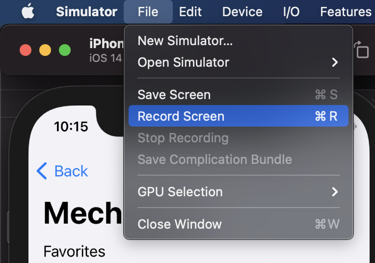
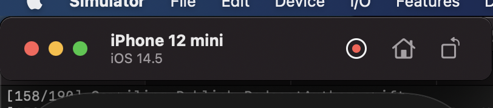
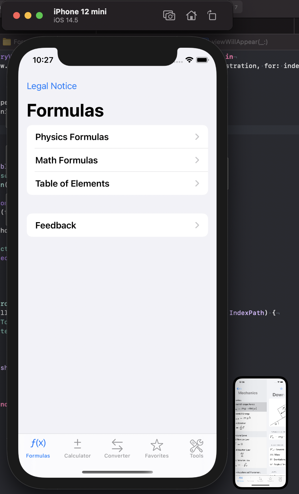
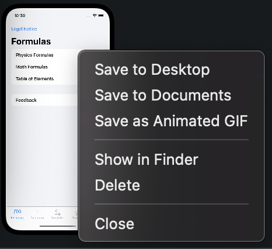
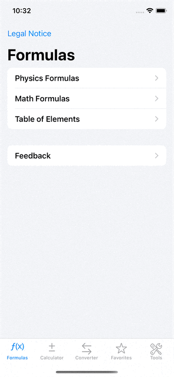

Record A Video Of Your App In The Simulator
A video of your app running on a device or in the simulator shows the potential users not only the user interface but also how the apps feels like. It shows if the animations are to long and how the parts of the app are connected to each other. You can use such a video to show off your app on social media. Or you can add the video to your app page in the App Store.
The Old Way
For quite some time you could record a video of the simulator screen with the following simctl command:
xcrun simctl io booted recordVideo --codec="h264" "foobar.mov"
The New Way
Since Xcode 12 you can record such a video directly in the Simulator app. Open you app in the simulator and select the menu item 'File / Record Screen'.
But you don't have to use the menu item. There is even a button in the simulator itself. When you press the Option key (⌥) the screenshot button becomes a record button.
The Result
After you have stopped the recording, a small window appears next to the simulator showing the result.
The result window disappears after a few seconds and the recording is stored on the Desktop. But you can also ⌃click it to show an options menu.
For example the animated GIF of the recording of one of my apps looks like this:
Your Turn
After you have now learned how to record a video of the app you are working on, I'd love to see it. Record a video of your app, post it on Twitter and mention me (@dasdom) that I get notified.